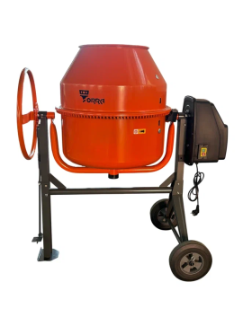
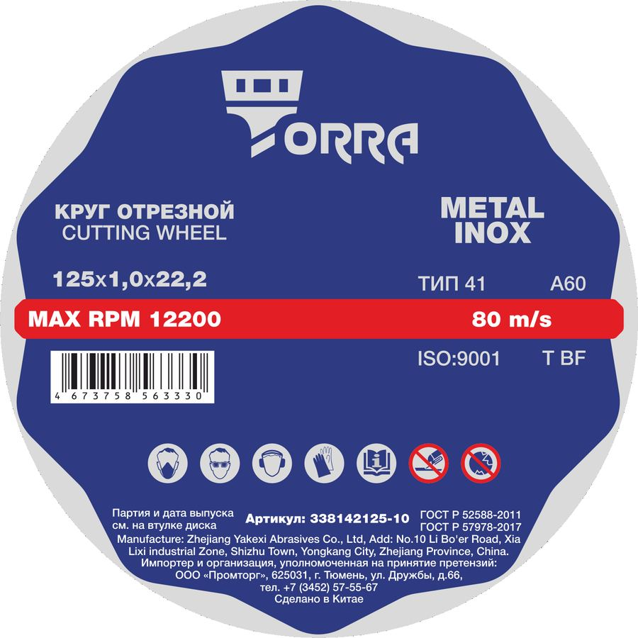

Своя марка · розница
TORRA
Узкий, но сильный СТМ: бетоносмесители, профессиональная пена и отрезные круги по металлу.

На сайте в карточке бренда — линейка бетоносмесителей разных объёмов, пена TORRA PRO 65 и супертонкие отрезные круги по металлу/нержавейке.
Что сказать покупателю
- «TORRA — наша марка для стройки: миксеры, пена, круги».
- По пене: PRO 65 — профессиональная, под пистолет (рядом с MIKA 65).
- По кругам: тонкий рез металла и нержавейки.
Важно: в названиях бетоносмесителей встречается серия AOER — это исполнение внутри TORRA, не отдельный бренд.



Как продавать рядом с MIKA
- Бетоносмеситель — уточните объём барабана, сравните MIKA и TORRA.
- Двери/окна — предложите выбор: MIKA 65 проф или TORRA PRO 65.
- Резка металла — круги Torra; камень/бетон/плитка — чаще алмазные диски MIKA.
Каталог: gvozditut.ru/brands/torra